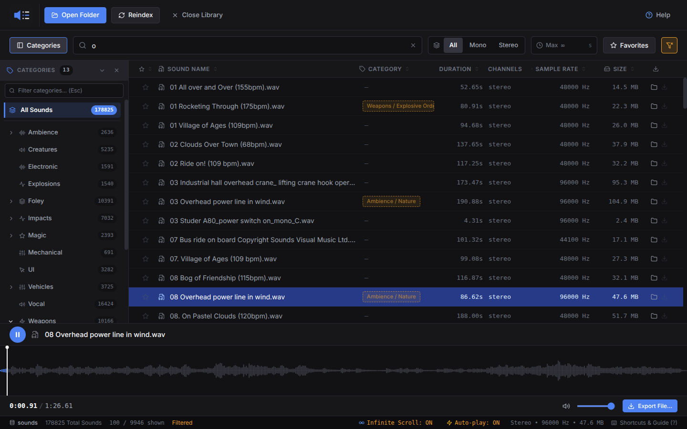

- Search & auto-categorizeInstant fuzzy filtering, auto-tagged on index.
- Waveform previewClick-to-seek, drag to select and loop a region.
- Batch exporterWAV or OGG, any sample rate, auto-numbered output.
- DAW drag & dropDrag straight into Reaper, Ableton, FL Studio, and more.
- 100% offlineNo accounts, no subscriptions, no tracking.
- MCP server (opt-in)Let AI tools search, tag, and export your library.